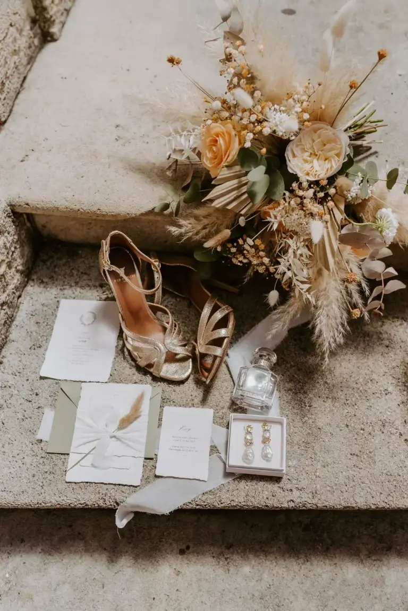
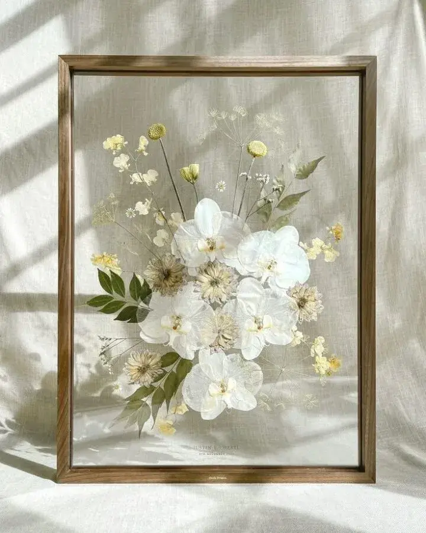
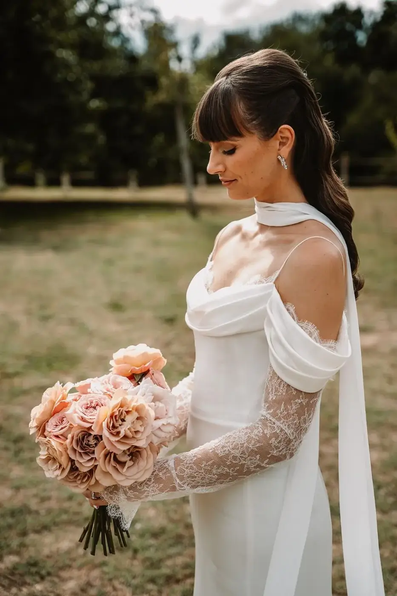

Pourquoi conserver son bouquet de mariage ?
Le jour de votre mariage est une journée unique, une parenthèse enchantée que vous avez imaginée, préparée et rêvée pendant des mois, parfois même des années. Chaque détail a été choisi avec soin pour raconter votre histoire : le lieu de réception, la décoration, les tenues, les alliances, les fleurs… Parmi tous ces éléments, le bouquet de mariage occupe une place toute particulière.
Bien plus qu’un simple accessoire, il accompagne la mariée tout au long de cette journée exceptionnelle. Il est présent lors des préparatifs, lors de la cérémonie, sur les photographies les plus précieuses et dans les moments les plus intimes. Il devient le symbole de votre personnalité, de votre style et de l’émotion qui vous accompagne lorsque vous vous apprêtez à dire « oui ».
Pourtant, comme toutes les fleurs fraîches, sa beauté est naturellement éphémère. Quelques jours après le mariage, les pétales commencent à se faner, les couleurs perdent de leur éclat et le bouquet disparaît peu à peu.
C’est souvent à cet instant que de nombreuses mariées ressentent une légère nostalgie. Après avoir consacré tant d’attention à la création de leur bouquet de mariage, elles réalisent qu’elles vont devoir s’en séparer.
Heureusement, il existe aujourd’hui une solution aussi élégante qu’émouvante : le bouquet éternel.
Cette alternative permet de conserver les fleurs de votre mariage pendant de nombreuses années afin de transformer un souvenir fugace en véritable patrimoine sentimental.
Le bouquet éternel : un souvenir qui traverse le temps
Contrairement à ce que l’on pourrait imaginer, un bouquet éternel n’est pas composé de fleurs artificielles.
Il s’agit de véritables fleurs naturelles ayant bénéficié d’un procédé de conservation spécifique permettant de préserver leur apparence, leur texture et leurs couleurs pendant une très longue période.
Le bouquet éternel répond à une envie de plus en plus présente chez les mariés : prolonger les émotions du jour J et conserver un lien tangible avec l’un des plus beaux moments de leur vie.
Dans un monde où les souvenirs sont souvent stockés sur des téléphones ou des disques durs, conserver son bouquet de mariage offre une expérience différente. Il ne s’agit plus simplement de regarder une photo, mais de retrouver un objet réel, chargé d’émotions et de souvenirs.
Chaque fleur raconte une histoire.
Elle rappelle l’instant où vous avez franchi l’allée centrale, les regards échangés pendant la cérémonie, les éclats de rire avec vos proches et les moments suspendus qui rendent un mariage inoubliable.

Quelle différence entre fleurs séchées, fleurs stabilisées et fleurs artificielles ?
Lorsqu’on évoque le bouquet éternel, plusieurs termes reviennent régulièrement : fleurs séchées, fleurs stabilisées et fleurs artificielles.
Pourtant, ces trois techniques sont très différentes.

Les fleurs séchées : un charme authentique et naturel
Le séchage est la méthode de conservation la plus ancienne.
Elle consiste à laisser les fleurs perdre naturellement leur eau afin qu’elles puissent être conservées plus longtemps.
Les fleurs séchées séduisent par leur aspect authentique, poétique et légèrement vintage. Elles s’intègrent parfaitement dans les univers bohèmes, champêtres ou romantiques.
Cependant, le séchage entraîne généralement quelques modifications :
- Les couleurs deviennent plus douces ou plus foncées ;
- Les pétales deviennent plus fragiles ;
- La forme initiale peut légèrement évoluer ;
- Certaines fleurs supportent mieux le processus que d’autres.
Un bouquet de mariage séché conserve ainsi toute sa dimension émotionnelle, mais avec une apparence transformée par le temps.
Les fleurs stabilisées : l'excellence du bouquet éternel
La stabilisation représente aujourd’hui la technique la plus sophistiquée pour créer un véritable bouquet éternel.
Le procédé consiste à remplacer la sève naturelle de la fleur par une solution végétale biodégradable.
Grâce à cette méthode, les fleurs conservent :
- Leur souplesse naturelle ;
- Leur aspect d’origine ;
- Leur couleur ;
- Leur texture.
Le résultat est particulièrement impressionnant.
Les fleurs semblent fraîchement cueillies alors qu’elles peuvent être conservées pendant plusieurs années sans entretien particulier.
C’est la solution privilégiée pour les couples qui souhaitent retrouver le plus fidèlement possible leur bouquet de mariage d’origine.

Les fleurs artificielles : une alternative décorative
Les fleurs artificielles sont fabriquées à partir de matériaux synthétiques tels que le tissu, la soie, le latex ou le plastique.
Elles présentent certains avantages :
- Durée de vie très longue ;
- Aucune contrainte d’entretien ;
- Grande variété de modèles.
Cependant, elles ne possèdent pas la même valeur émotionnelle qu’un bouquet éternel composé de véritables fleurs ayant accompagné votre mariage.
La différence est importante : conserver son bouquet de mariage, c’est préserver une partie authentique de son histoire. Les fleurs artificielles, aussi réalistes soient-elles, ne portent pas cette mémoire.
C’est pourquoi les fleurs stabilisées sont aujourd’hui considérées comme la référence lorsqu’il s’agit de créer un véritable bouquet éternel.
Pourquoi le bouquet éternel séduit de plus en plus les mariées ?
Les tendances mariage évoluent constamment, mais certaines valeurs restent intemporelles : l’émotion, l’authenticité et le souvenir.
Aujourd’hui, les futurs mariés recherchent davantage de sens dans leurs choix. Ils souhaitent conserver les moments importants et créer des objets qui racontent leur histoire.
Le bouquet éternel répond parfaitement à cette envie.
Il permet de prolonger la magie du mariage tout en donnant une seconde vie à une création florale soigneusement pensée.
De plus, les réseaux sociaux ont largement contribué à populariser cette tendance. De nombreuses mariées partagent désormais les créations réalisées à partir de leur bouquet de mariage : tableaux floraux, cadres personnalisés, cloches en verre ou couronnes décoratives.
Chaque réalisation devient unique.
Aucun bouquet éternel ne ressemble à un autre puisque chaque histoire d’amour est différente.
Parmi les options les plus élégantes, le tableau floral reste l’une des préférées des jeunes mariés.
Les fleurs du bouquet sont soigneusement conservées puis mises en scène dans un cadre profond spécialement conçu pour les protéger.
Cette présentation permet de transformer votre bouquet de mariage en véritable œuvre d’art.
Accroché dans une chambre, un salon ou une entrée, il apporte une dimension personnelle à votre décoration intérieure.
Chaque regard posé sur ce tableau ravive les émotions du jour J et rappelle les promesses échangées.
Le cadre peut être entièrement personnalisé afin de s’harmoniser avec votre univers décoratif :
- Bois naturel ;
- Bois foncé ;
- Métal noir ;
- Dorure élégante ;
- Cadre contemporain minimaliste.
Certaines créations intègrent également la date du mariage, les prénoms des mariés ou une citation symbolique.
Le tableau floral : quand le bouquet devient une œuvre d'art

La sphère de verre : capturer la magie de votre mariage
Pour celles et ceux qui apprécient les objets raffinés, la sphère de verre offre une mise en valeur particulièrement poétique du bouquet éternel.
Protégées sous une cloche ou dans une sphère transparente, les fleurs semblent suspendues dans le temps.
Le verre protège efficacement contre :
- La poussière ;
- L’humidité ;
- Les manipulations répétées.
Cette présentation apporte également beaucoup de légèreté visuelle et permet d’observer les fleurs sous tous les angles.
Installée sur une cheminée, une console ou une bibliothèque, elle devient un véritable objet de décoration haut de gamme.

Le coffret souvenir : transmettre une histoire familiale
Certains souvenirs méritent d’être préservés dans l’intimité.
Le coffret souvenir répond parfaitement à cette philosophie.
Fabriqué en bois, en velours ou dans des matériaux nobles, il accueille le bouquet éternel dans un écrin protégé.
Plus qu’un simple objet décoratif, il devient un véritable héritage émotionnel.
Imaginez dans quelques années ouvrir ce coffret avec vos enfants et leur raconter l’histoire de votre mariage.
Les fleurs deviennent alors les témoins silencieux d’un moment fondateur de votre histoire familiale.
Cette dimension intergénérationnelle séduit de nombreux couples qui souhaitent transmettre leurs souvenirs les plus précieux.
Le présentoir design : une sculpture florale contemporaine
Les amateurs de décoration moderne apprécient particulièrement le présentoir design.
Cette présentation consiste à conserver la forme globale du bouquet tout en le mettant en valeur sur un support spécialement conçu.
Bois massif, métal, marbre ou acrylique transparent : les possibilités sont nombreuses.
Le bouquet éternel devient alors une véritable sculpture florale qui attire naturellement l’attention.
Facile à déplacer, il accompagne l’évolution de votre décoration intérieure tout en conservant sa forte valeur sentimentale.

Comment conserver son bouquet de mariage dans les meilleures conditions ?
Même si les fleurs stabilisées sont conçues pour durer, quelques précautions permettent d’optimiser leur longévité.
Pour préserver votre bouquet éternel :
- Évitez l’exposition directe au soleil ;
- Maintenez-le à l’abri de l’humidité ;
- Évitez les sources de chaleur importantes ;
- Dépoussiérez-le délicatement si nécessaire ;
- Limitez les manipulations répétées.
Grâce à ces gestes simples, votre bouquet de mariage pourra conserver sa beauté pendant de très nombreuses années.

Un choix esthétique, émotionnel et responsable
Choisir un bouquet éternel, c’est également adopter une démarche plus durable.
Au lieu de laisser disparaître les fleurs quelques jours après le mariage, vous leur offrez une seconde vie.
Cette approche s’inscrit parfaitement dans les nouvelles tendances du mariage responsable où chaque élément est pensé pour avoir un impact durable.
Le bouquet ne devient plus un simple élément décoratif consommable.
Il se transforme en objet de mémoire.
Un souvenir précieux qui accompagne votre vie de couple au quotidien.

En bref,
Chez Lovely Day Event, nous savons que les plus belles histoires ne se limitent pas à une seule journée.
Le mariage est un moment exceptionnel, mais les émotions qu’il suscite méritent d’être préservées bien au-delà du jour J.
Le bouquet éternel incarne parfaitement cette philosophie.
Il permet de conserver une trace tangible de votre amour, de votre engagement et des souvenirs partagés avec ceux qui vous sont chers.
Qu’il soit transformé en tableau floral, placé sous une sphère de verre, conservé dans un coffret souvenir, revisité en couronne murale ou présenté comme une sculpture contemporaine, votre bouquet de mariage continue à raconter votre histoire année après année.
Parce qu’un mariage est bien plus qu’un événement, il mérite de laisser une empreinte durable dans votre quotidien.
Et parce que chaque Lovely Day mérite de vivre éternellement, le bouquet éternel est sans doute l’une des plus belles façons de prolonger la magie.